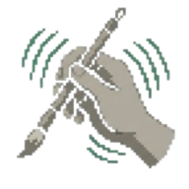

Floor 2 of 5 · Moss Garden
A place to rest
YOUR RUNHP 6 / 11
Pencil 3 / 10
Reroll tokens 0
CURSE ON YOU

Trembling Hand
Sit a while and choose oneThe tea is warm; the other bowls go cold

Heal
Restore 3 HP.
HP 6 → 9

Fresh ink
+4 pencil marks.
Pencil 3 → 7
Reroll token
+1 free reroll at the next shop.
Tokens 0 → 1
Cleanse
Lift the oldest curse: Trembling Hand.
Curses 1 → 0
1–4 or the D-pad to choose · the same key again drinks
Rest · Proposal · Tea bowls on a low table, one slip per choice